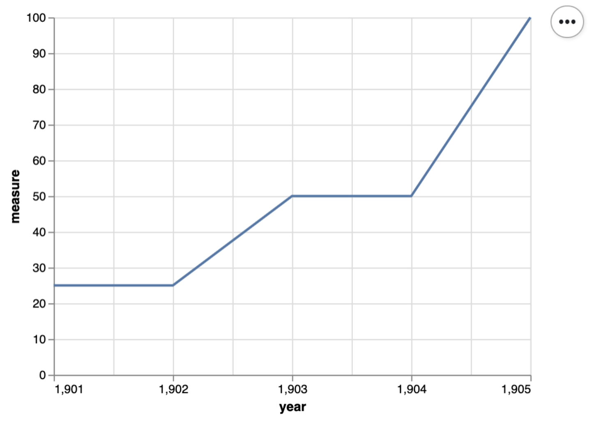

DSCI 522 Lecture 8
Testing Code & Conclusion
Image generated by OpenAI GPT-5
iClicker: How do you verify your code is working as expected?
A. I stare at it really hard and hope my eyes don’t deceive me! 👀
B. I share it with my mentor/supervisor/peer and see if they catch any bugs! 🤝
C. I run it once on a small dataset, if it doesn’t crash, we’re good! 🎲
D. I write unit tests like a responsible adult (boring but effective) ✅
E. I pray for the best! 🙏
Why do we need to test our code?

Source: Waymo
When the real-world is out of your test scope…
Modularize your script into functions

Tets for your functions should …
- controllability:
- You are not randomly passing in a different input value every time you run the test
- observability: the outcome can beverified
- Each function by default returns an object
- isolateablilty: can be validated on its own
- Test one function at a time
- automatability: you automatically run, and verify the results
- NOT by staring really with your bare eyes!

Source: Timbers et al. (2023); GIF source
What kinds of tests do we write for our functions?
We have three broad categories of tests, and we should write 2-3 tests for each (or more if the function is complex):
Simple expected use cases
Edge cases (unexpected, or rare use cases)
Abnormal, error or adversarial use cases (error handling)
Example: Which cow is missing ?? 🤯

Image generated by OpenAI GPT-5
Moo4feed package
- code coverage report
- 2295 tests created and passed
- 96% code coverage

1. Write function documentation first (R)
#' Check for cows that haven't been seen after noon
#'
#' This function identifies cows that haven't been seen after noon (12pm)
#' and updates the warning data frame accordingly. This is to warn users
#' in cases when a cow lost its ear tag and not able to access the feeder
#' and drinker.
#'
#' @param comb List of daily data frames (feed, water or combined).
#' @param warn Warning data frame to update
#' @param id_col Animal ID column name (default current global value from [id_col2()])
#' @param end_col End time column name (default current global value from [end_col2()])
#' @param tz Time zone string for date-time operations
#' @param verbose Logical. If TRUE, print details of data where errors were detected
#'
#' @return Updated warning data frame with no-show information
qc_no_show <- function(comb,
warn,
id_col = id_col2(),
end_col = end_col2(),
tz = tz2(),
verbose = TRUE)1. Write function documentation first (Python)
"""
Quality control functions for detecting missing cows!
This module provides functions to check and validate dairy cow feeding and
drinking data, identifying potential issues such as missing cows.
Author: Your Name
Date: 2025-12-10
"""
def qc_no_show(comb, warn, id_col=None, end_col=None, tz=None, verbose=True):
"""
Check for cows that haven't been seen after noon.
This function identifies cows that haven't been seen after noon (12pm)
and updates the warning data frame accordingly. This is to warn users
in cases when a cow lost its ear tag and not able to access the feeder
and drinker.
Parameters
----------
comb : dict of pd.DataFrame
Dictionary of daily data frames (feed, water or combined) with dates as keys.
warn : pd.DataFrame
Data frame recording warning information such as missing cows.
id_col : str, optional
Animal ID column name (default is None, uses global value).
end_col : str, optional
End time column name (default is None, uses global value).
tz : str, optional
Time zone string for date-time operations (default is None).
verbose : bool, default=True
If True, print details of data where errors were detected.
Returns
-------
pd.DataFrame
Updated warning data frame with no-show information.
"""2. Plan your test cases 🤔
- What are some expected use cases?
- What are some edge cases?
- What are some error cases ?
2. Plan your test cases
- Expected use cases:
- Cow 1 went missing after 11am –> 🚨
- Cow 2 stays in the pen all day –> ✅
- Edge cases:
- Input dataframe is empty
- Input dataframe only has one row
- Error cases:
- Input feeding and drinking data is not a dataframe
- Input warning data is not a dataframe
3. Create simple test data
- Example INPUT test data:

3. Create simple test data
- Example OUTPUT test data:
4. Write the tests (R)
Here are the tests I wrote for this function: test-qc_no_show.R
4. Write the tests (Python with pytest)
# ----------------------------------------------------------------------------- #
# Create test warning data #
# ----------------------------------------------------------------------------- #
# Standard warning DataFrame used across all tests
# This represents a small section of the expected structure of
# the warning tracking system
WARN_DF = pd.DataFrame({
"date": [pd.to_datetime("2024-01-01").date()],
"cows_disappeared_after_noon": [None]
})
# ----------------------------------------------------------------------------- #
# Normal case test data #
# ----------------------------------------------------------------------------- #
# Multiple cows with different last-seen times
# Expected behavior: Cow 1 should be flagged (last seen at 11:00, before noon)
# Cows 2 and 3 should NOT be flagged (seen after noon)
NORMAL_CASE_DATA = {
"2024-01-01": pd.DataFrame({
"cow": [1, 1, 2, 2, 3],
"end": pd.to_datetime([
"2024-01-01 10:00:00", # Cow 1 last seen before noon
"2024-01-01 11:00:00",
"2024-01-01 13:00:00", # Cow 2 seen after noon
"2024-01-01 15:00:00",
"2024-01-01 19:00:00" # Cow 3 seen after noon
], utc=True)
})
}
# ----------------------------------------------------------------------------- #
# Edge case test data #
# ----------------------------------------------------------------------------- #
# Empty DataFrame - no cows recorded for the day
# Expected behavior: Should handle gracefully without errors
EMPTY_DATA = {
"2024-01-01": pd.DataFrame({
"cow": pd.Series([], dtype=str),
"end": pd.to_datetime([], utc=True)
})
}
# Single record - only one cow with one observation
# Expected behavior: Should correctly identify if that cow disappeared before noon
SINGLE_RECORD_DATA = {
"2024-01-01": pd.DataFrame({
"cow": [1],
"end": pd.to_datetime(["2024-01-01 10:00:00"], utc=True)
})
}
# ----------------------------------------------------------------------------- #
# Error handling test data #
# ----------------------------------------------------------------------------- #
# Invalid dictionary with non-DataFrame items
# Expected behavior: Should raise TypeError
INVALID_DICT_DATA = {
"2024-01-01": pd.DataFrame({"cow": [1]}),
"2024-01-02": "not a data frame" # Invalid: string instead of DataFrame
}
# ----------------------------------------------------------------------------- #
# qc_no_show() – normal cases #
# ----------------------------------------------------------------------------- #
def test_qc_no_show_success():
"""Test that qc_no_show() correctly identifies cows that disappeared after noon."""
result = qc_no_show(
NORMAL_CASE_DATA,
WARN_DF.copy(),
id_col="cow",
end_col="end",
tz="UTC",
verbose=False
)
# Verify return type
assert isinstance(result, pd.DataFrame)
# Verify the specific cow (Cow 1) is correctly flagged with last seen time
expected_value = "1, 11:00:00"
actual_value = result["cows_disappeared_after_noon"].iloc[0]
assert actual_value == expected_value
# ----------------------------------------------------------------------------- #
# qc_no_show() – edge cases #
# ----------------------------------------------------------------------------- #
def test_qc_no_show_edge():
"""Test that qc_no_show() handles empty and single-record data frames correctly."""
# Test empty DataFrame - should return warning DataFrame with NaN values
result_empty = qc_no_show(EMPTY_DATA, WARN_DF.copy(), tz="UTC", verbose=False)
assert pd.isna(result_empty.iloc[0, 1:]).all()
# Test single record - should correctly identify the single cow if it disappeared before noon
result_single = qc_no_show(SINGLE_RECORD_DATA, WARN_DF.copy(), tz="UTC", verbose=False)
expected_value = "1, 10:00:00"
actual_value = result_single["cows_disappeared_after_noon"].iloc[0]
assert actual_value == expected_value
# ----------------------------------------------------------------------------- #
# qc_no_show() – error handling #
# ----------------------------------------------------------------------------- #
def test_qc_no_show_errors():
"""Test that qc_no_show() validates inputs correctly and raises appropriate errors."""
# Test 1: Empty dictionary should raise ValueError
with pytest.raises(ValueError, match="`comb` must be a non-empty"):
qc_no_show({}, WARN_DF.copy())
# Test 2: Dictionary with non-DataFrame items should raise TypeError
with pytest.raises(TypeError, match="All elements in `comb` must be DataFrames"):
qc_no_show(INVALID_DICT_DATA, WARN_DF.copy())
# Test 3: Non-DataFrame warn argument should raise TypeError
with pytest.raises(TypeError, match="`warn` must be a DataFrame"):
qc_no_show({"2024-01-01": pd.DataFrame()}, "not_a_df")5. Implement the function (R)
Here is the function I implemented qc_no_show.R
5. Implement the function (Python)
def qc_no_show(comb, warn, id_col=None, end_col=None, tz=None, verbose=True):
"""
Check for cows that haven't been seen after noon.
This function identifies cows that haven't been seen after noon (12pm)
and updates the warning data frame accordingly. This is to warn users
in cases when a cow lost its ear tag and not able to access the feeder
and drinker.
Parameters
----------
comb : dict of pd.DataFrame
Dictionary of daily data frames (feed, water or combined) with dates as keys.
warn : pd.DataFrame
Data frame recording warning information such as missing cows.
id_col : str, optional
Animal ID column name (default is None, uses global value).
end_col : str, optional
End time column name (default is None, uses global value).
tz : str, optional
Time zone string for date-time operations (default is None).
verbose : bool, default=True
If True, print details of data where errors were detected.
Returns
-------
pd.DataFrame
Updated warning data frame with no-show information.
"""
# Input validation
if not isinstance(comb, dict) or len(comb) == 0:
raise ValueError("`comb` must be a non-empty dictionary of data frames.")
if not all(isinstance(df, pd.DataFrame) for df in comb.values()):
raise TypeError("All elements in `comb` must be DataFrames.")
if not isinstance(warn, pd.DataFrame):
raise TypeError("`warn` must be a DataFrame.")
# Create a copy of warn to avoid modifying the original
warn = warn.copy()
# Process each day
for date, df in comb.items():
# Find the row index for this date in the warning dataframe
day_idx = warn[warn["date"] == pd.to_datetime(date).date()].index
if len(day_idx) == 0 or df.empty:
continue
# Define cutoff time (noon)
noon_cutoff = pd.to_datetime(f"{date} 12:00:00", utc=True)
# Get last seen times for each cow
# Sort by id and end time, then keep only the last record per cow
last_seen_cows = (df
.sort_values([id_col, end_col])
.groupby(id_col, as_index=False)
.tail(1))
# Filter cows not seen after noon
not_seen = last_seen_cows[last_seen_cows[end_col] < noon_cutoff]
# Create warning strings
if not not_seen.empty:
warning_list = []
for _, row in not_seen.iterrows():
cow_id = row[id_col]
time_str = row[end_col].strftime("%H:%M:%S")
warning_list.append(f"{cow_id}, {time_str}")
# Sort and join warnings
warning_str = "; ".join(sorted(warning_list))
warn.loc[day_idx, "cows_disappeared_after_noon"] = warning_str
else:
warn.loc[day_idx, "cows_disappeared_after_noon"] = None
return warn7. Run the tests and iterate and improve 🔁
- Run your tests and see if they pass
pytest - If not, check for bugs in your function or tests
Workflow for writing functions and tests : Testing-driven development
Write function documentation first - Define the function name, inputs, and outputs. Leave the function body empty for now.
Plan your test cases - Think about what tests you need: normal cases, edge cases, and error cases.
Create simple test data - Make small, easy-to-understand input and expected output data.
Write the tests - Code the tests using your test cases and test data.
Implement the function - Write the actual function code to pass your tests.
Iterate and improve - Go back to steps 2-5 to add more tests and refine your function.
Pytest for plots
# define a small dataset
small_data = pd.DataFrame({
'year': np.array([1901, 1902, 1903, 1904, 1905]),
'measure' : np.array([25, 25, 50, 50, 100])
})
# define a scatter plot function
def scatter(df, x_axis, y_axis):
chart = alt.Chart(df).mark_line().encode(
alt.X(x_axis + ':Q',
scale=alt.Scale(zero=False),
axis=alt.Axis(tickMinStep=1)
),
y=y_axis
)
return chart
# plot the small dataset
small_scatter = scatter(small_data, 'year', 'measure')
small_scatter.show()Source: Timbers et al. (2023)
Pytest for plots (continued)
Source: Timbers et al. (2023)
Pytest for this plot
def test_scatter():
assert small_scatter.encoding.x.field == 'year', 'x_axis should be mapped to the x axis'
assert small_scatter.encoding.y.field == 'measure', 'y_axis should be mapped to the y axis'
assert small_scatter.mark == 'line', 'mark should be a line'
assert small_scatter.encoding.x.scale.zero == False, "x-axis should not start at 0"
assert small_scatter.encoding.x.axis.tickMinStep == 1, "x-axis small tick step should be 1"Read more about regression testing for plots here.
Tiffany’s Example
You can use Tiffany’s github repository as an example to guide Milestone 4.
🙋♀️ “Can I use LLMs to help me write tests and code?”
YES! BUT…
- Use AI in a smart way!
- You are the BOSS, you need to know what you want
- Option 1:
- you design the normal, edge and error handling cases
- LLM (recommend Claude) generate the test code for you
- You review the code thoroughly, edit as needed
- you design the normal, edge and error handling cases
Heads up!
🤖 LLMs are bad at counting…
System prompts for LLMs
- Option 2:
- Start with writing code manually yourself, design the standard documentation style, coding style, function signiture style, global variables in the way YOU like.
- Use your technical + domain knowledge to write the system prompts, customize your AI agents to “duplicate your brain” and be a helpful 24-7 assistant.
- system prompt I used in Cursor for
moo4feed(cursor rules file)
⭐️ Course evaluation
Let’s take 10 minutes to fill out the course evaluation form on Canvas.
⚠️ Reminder
Please do not forget to submit your assignments on GradeScope!
- Peer review
- Milestone 4
- Individual Assignment 4
- Teamwork Reflection
🧹 Clean up your computataional environment!
🫧 Clean up your conda environments
- Check all the conda environments you have created.
- Remove the environment you are not using anymore.
🐳 Clean up your docker containers: Command line
- Check all the docker containers you have created.
- Remove the container you are not using anymore.
⚠️ Tip:You may have containers that are still running, and not stopped properly. You need to stop the container before removing it.
🐳 Clean up your docker containers: Docker Dashboard
- Click on “Containers” & “Images” on the left sidebar ➡️ trash can icon
Fork your group’s repository to your own GitHub main page
- What is “Star” ⭐️?
- What is “Watch” 🔔?
- What is “Fork” 🍴?
- What is “Pin” 📌?
✨ Final remarks
Thank you!
- You have gone above and beyond in your project with Docker!!
- This is my first time teaching at MDS, I appreciate your engagement, perseverance in debugging, and patience in the class.

Image generated by OpenAI GPT-5
Hope you always see your values and shines like a star 🌟
- This is the last course I teach with the 2025-2026 cohort.
- Feel free to message me if you ever need support or confidence boost!

Image generated by OpenAI GPT-5